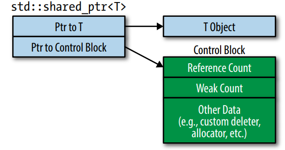
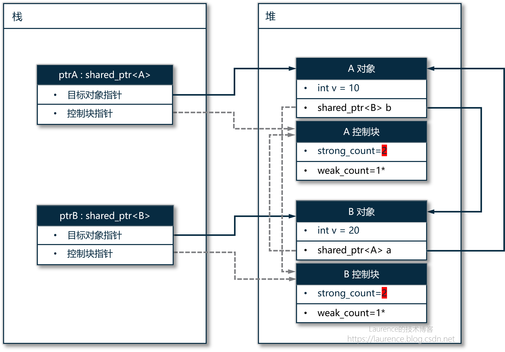

C++ 智能指针：示例、原理、适用场景全方位解读

智能指针被设计出来就是为了解决原生指针的问题的，所以，要理解智能指针的作用，还是得“从问题入手”，看一下原生指针都有哪些“痛点”。理解本文内容需要对虚拟内存的堆和栈对清晰的认识，也需要清楚地知道 C++ 是如何使用堆和栈的，关于这部分内容，请参考 《编程底层概念回顾：虚拟内存、栈、栈帧、堆》 和 《C++ 对象和嵌套对象的创建与销毁》 两篇文章。
1. 原生指针的“痛”
原生指针也叫裸指针，是 C++ 里知名的“双刃剑”，它的“底层性”和“灵活性”既是优势，也是劣势，在智能指针出现之前，使用指针的过程中会出现很多典型问题，我们逐一梳理一下：
-
内存泄漏
由裸指针引起的内存泄漏问题真得有很多，究其因在于：C++ 没有像 Java 那样的垃圾回收机制，完全靠程序员掌控堆空间的回收，而人是容易犯错的，可能是忘记了手写 delete 操作，也可能是程序执行的控制逻辑跳过了 delete 操作，而在 C++ 这一测，没有任何机制可以有效检测或约束这些情况的发生，于是就会让“内存泄漏”变成了一个常被讨论的热点话题。我们来看一些内存泄漏的典型示例：
-
忘记释放内存
1
2
3
4void foo() {
int* p = new int(10);
// 忘记 delete p;
} -
抛出异常，跳过了内存释放操作
1
2
3
4
5void foo() {
int* p = new int(10);
risky(); // 这里抛异常
delete p;
} -
指针重定向，原对象永久丢失
1
2int* p = new int(10);
p = new int(20); // 原来的 10 失去唯一指针，永远无发再找回 -
容器里存裸指针但未循环清理
1
2
3
4
5
6
7std::vector<int*> vec;
vec.push_back(new int(1));
vec.push_back(new int(2));
// 程序结束时没有追一 delete 各个元素
// vector 析构时只销毁指针本身，不会自动迭代内部元素逐一 delete。
以上只是几种比较常见的内存泄漏，在实际开发中，会有很多更复杂的情况，导致内存泄漏很难排查。
-
-
指针悬空
当两个指针指向同一个对象时，如果通过其中一个指针释放了资源，而忘记对第二个指针将指针置空，这样，第二个指针就指向了一个已经释放掉的对象上，这会导致它的值变成了“未定义”的，具体值无法预测。（注：悬空指针就是野指针的一种，野指针是指未初始化或指向了一个已经失效的地址的指针）
1
2
3
4
5
6
7
8int* p1 = new int(10);
int* p2 = p1;
delete p1;
p1 = nullptr;
std::cout << *p2 << std::endl;
return 0;指针悬空后同样不会报错，还会给出无法预测的值，所以也是一个“坑”。
-
指针未初始化
指针为初始化也是野指针的一种，通常是新手才会犯的错误，请记住：定义一个指针时一定要顺手初始化它，如果当时不知道让它指向哪里，就先设为空指针 nullptr，如果不初始化，根据我们在<> 和 <> 两篇文章中介绍的内容可知：定义后，C++ 一定会在栈上为其开辟存储空间，但你不给它设初值，那它的值就是上一个栈帧遗留的“垃圾值”：
1
2
3int* p;
// 危险：访问野指针，结果不可预测（大概率崩溃）
cout << *p << endl;程序崩溃的原因也不难理解：如果 P 的值，也就是地址是一个无法确定的值，那么，它落在合法的“虚拟内存”分配的“栈”内存段上的概率是极低的，当程序试图读取一个非法内存地址上的数据时会被操作系统强制终止。
-
指针指向了超出作用域的栈内存
这和指针悬空的情况有一些类似，造成指针指向了“已失效”地址的原因是：指针指向了一个由函数返回的其内部的局部变量，函数返回后，这个局部变量随着栈帧弹出，栈顶指针的移动就已自动失效了。
1
2
3
4
5
6
7
8
9
10
11
12
13
using namespace std;
int* getNum() {
int a = 10; // a在栈上，函数结束后销毁
return &a; // 返回a的地址
}
int main() {
int* p = getNum(); // 函数返回以后，函数内的局部变量 a 就已被清理，p指向了一个已销毁的变量的地址
cout << *p << endl; // 访问野指针，结果不可控
return 0;
} -
野指针
上述“悬空指针”、“未初始化的指针”和“指向了超出作用域栈内存的指针”都是“野指针”，这里列出只为明确概念。野指针的特点就是指向了一个未初始化或一个已经失效的地址。
-
双重释放
将一个已经释放掉的指针再次释放也是有可能会发生的，在复杂的程序代码里这并不稀奇：
1
2
3int* p = new int(10);
delete p;
delete p; // 未定义行为，结果不可预测（大概率崩溃）
2. 智能指针
我们几乎列举了指针所有可能出现的“糟糕情况”，我们不会说指针是一种糟糕的设计，很多辩护者会说这是“人的疏忽”，并不是指针的错，但是，这些典型问题确实反映出了指针的一个“根源性问题”，就是： 指针只是一个地址值，它没有其指向对象的“所有权” ，这导致了指针和它所指对象在作用域和生命周期上会出现“各种不一致”，上述的各种问题基本都也可以归结到这一点上，要么是指针已经失效了，对象还在，要么就是对象已经销毁了，指针还在。这个根源性问题恰恰是我们改善裸指针的“方向”：如果我们能 设计一种机制或提供一些工具类，把指针和它所指对象的生命周期进行绑定，就可以规避裸指针的很多问题，这就是“智能指针”的设计思路 。
从实现方式上看：智能指针像是一个原生指针的“容器”，它把一个原生指针“包裹”起来，然后提供一种机制（控制块）记录指向同一对象的智能指针实例数量，确保在最后一个智能指针实例销毁时同步销毁目标对象（即生命周期绑定），就实现了设计目标，另外，智能指针还实现了很多指针相关的运算符，尽量去模拟指针的使用习惯，让这个“原本是对象”东西使用起来很像一个“指针”。
一个忠告：使用智能指针最好是先用起来，在实际场景里结合业务背景、设计意图来决定你需要的是哪一种智能指针，不要一头扎到智能指针表达的“语义”里试图推导出它的适用场景，过多“编程哲学”上的思考只会让自己陷入到思维旋涡中，越想越糊涂，因为智能指针它是纯语言范畴内的一种机制，如果一个智能指针没有一个“业务实体”作支撑，你就思考它所谓的“所有权”时会觉得非常空洞。一但你跳出来，找一个熟知的典型场景（比如构建树型结构）反向体会为什么在这里有的是这一种指针而不是另一种，你的思路会清晰起来。
C++ 标准库中提供了三种智能指针，分别是：共享指针 shared_ptr 、独享指针 unique_ptr 、弱指针 weak_ptr ，此外，C++ 98 中引入过 auto_ptr ，提供和现在的 unique_ptr 一样的功能，由于当时的 C++ 缺少一些现有的语言特性，使得它不容易理解和使用，现在已经不推荐使用了。下面我们就详细了解一下每一种智能指针。
3. 共享指针：shared_ptr
共享指针：shared_ptr 是一种可以随意创建或复制任意多个实例，但都指向同一个目标对象，且在最后一个实例的生命周期完结时，自动调用目标对象的析构函数并释放内存的一种指针。从应用角度上看，共享指针应该是使用范围最广的（尽管编程规范要求我们优先尝试使用独占指针，无法满足需求时再考虑共享指针），因为绝大数的场景下，我们需要的是这样一种“指针”：
-
随意复制（指针自身）
-
多处同时持有
-
不需要显式 delete
仅从使用场景上看，这已经几乎等同于 Java 中的普通引用类型了。注意，这里是忍不住要这么说的，这是从 Java 转到 C++ 遇到 shared_ptr 时的“第一反应”，但是，一个忠告： 不要试图将智能指针和Java引用类型作映射，否则你会陷入思考旋涡中 ，因为它们的问题域、设计理念完全不同，实现方式更是南辕北辙，如果你想试图在两者之间进行映射，你会发现思考越深入，你就越糊涂。
3.1 简单示例
我们先看一个简单的示例：
1 | int main() { |
最初， p1 指向堆上分配的这个 5 ， p2 = p1 是复制一个新的智能指针（实例），此时有了两个指针“对象”或“实例”，但它们内部的裸指针是同时指向 5 的（顺便说一句：复制时裸指针也会复制一份）。
这里要特别留意 p1 的初始化方式，虽然推荐的初始化方式是使用 make_shared() ，但这里的写法也要注意：它用的是“直接初始化”语法，是把 p1 创建在栈上的！ 智能指针的对象（实例）一定要创建在栈上，否则就又会引入关于智能指针对象的裸指针，同时，智能指针也需要利用“创建在栈上的对象在栈退出时会被自动调用析构函数销毁”这一机制省去了显式的 delete 操作！这就是为什么要使用 hared_ptr<int> p1(...) 这种“直接初始化”语法创建智能指针的原因 。
3.2 实现原理
我们借着上面的例子把 shared_ptr 的实现原理也介绍一下：shared_ptr 之所以能在对象不再被引用是自动析构目标对象并释放资源的关键是：它会纪录目标对象的“引用计数”，这是 shared_ptr 的“核心”，当复制了一新智能指针时，引用计数 +1（代码第4行），当一个智能指针指向了别的对象（代码第9行）或离开了作用域而被“销毁”时，引用计数 -1， 这里最关键的地方在于：其他智能指针实例/对象是怎么知道别的智能指针不再指向原对象了？对应到上面的示例就是：p1 是怎么知道 p2 不再指向 5 的呢？因为 p1 输出的 use_count 也自动 -1 了，这看上去很神奇，背后的实现是：引用计数是存放在 shared_ptr 对象内的一个叫“控制块”的结构体中，只有在初次初始化一个智能指针时才会创建这个控制块（和目标对象一样，都在堆上），然后内部持有一个指向控制块的指针，之后复制的指针实例都不会再创建控制块，进持有控制块的指针，所以，指向同一对象的智能指针共享同一个引用计数变量！如此才能实现共享计数 ！

关于控制块的创建，如果是使用 make_shared() 方法创建的 shared_ptr 实例，则控制块是在这个方法中 new 出来并将控制快的内存地址赋给 shared_ptr 控制块指针，如果是使用 shared_ptr 的 构造函数 创建的 shared_ptr 实例，则控制块是在它的构造函数中 new 出来并设给它的控制块指针的。
3.3 揣摩用意
一开始使用智能指针时最大的困难不是指针本身的用法，而是不知道应该在什么场景下使用什么指针，就像文章开头我们给出的忠告，最好是从熟知的典型案例揣摩为什么在这里要用这种指针，下面我们就给出一个 shared_ptr 的经典应用案例：UI 组件系统，讨论一下在这个场景中为什么选择的是 shared_ptr？在桌面应用里，UI 组件是按树形结构组织起来的，这是一个常识，如下是一个示意图：
1 | // 对象树 |
在 UI 系统里，父组件“拥有”子组件并掌控子组件的生命周期是很自然一件事，显然，我们要考虑在每一个组件中使用智能指针来持有它的子组件，问题就是：在 shared_ptr 和 unique_ptr 我们应该选谁？如果没有其他背景信息的话，仅基于目前的状况，答案是：unique_ptr（后面会介绍），因为如果我们预设节点不用保存 parent 的话，那么，每一个子组件只需要一个智能指针实例存放在父组件的 children 成员变量中就足够了，指针是独占的，只需要实例化一个足够了，所以应该使用 unique_ptr。但是，是在 UI 系统中，组件往往需要同时被其他系统使用，例如：时间系统、布局系统：
1 | // 布局树 |
这些系统不但要获得组件的指针，也是组件的“共同持有者”，组件不可以在未获得这些系统同意的情况下销毁。这就决定了：UI 树中的组件必须使用 shared_ptr。这是 UI 组件系统需要使用 shared_ptr 指代组件的关键原因。
1 | class Widget { |
这里也顺带说一下为什么没用一棵普通的数据结构的“树”来展示 shared_ptr？原因和上面的情况是一样的：单纯的“树”没有“要被其他外部数据结构访问”的典型场景，在这种背景缺失的情况下，普通的树结构中，children 应该是 std::vector<std::unique_ptr<Node> > children ，因为每一个 child 都应该被其 parent 独立拥有！
3.4 适用场景
我个人觉得很难用一句话精准总结出 shared_ptr 的适用场景，对于其他类型的智能指针同样如此，因为你会发现在如下三种方案：“unique_ptr + 引用传递”、“shared_ptr + 拷贝传递”、 “shared_ptr + 引用传递” 相互替换都不会报错，它们在语义上的差别极其微妙，关于这三种组合我们会在文章最后介绍。这里只简单地介绍一下 shared_ptr 适用场景。
当多个组件都需要访问同一份数据时，例如：Cache 对象 / Config 对象 / Session 对象，这些对象应该使用 shared_ptr，为什么？多个组件都需要访问数据，但谁也不是（不适合是）这份共享数据的“唯一所有者”，大家只是 User，也可以认为是“共同所有者”，当大家都不再使用时，让它自动销毁，所以使用 shared_ptr 是比较合适的。
4. 独占指针: unique_ptr
然后我们再来看与 shared_ptr 向对应的 unique_ptr。顾名思义，这是一种“独占目标对象”的指针，同一时刻只允许有一个指针实例，但是，unique_ptr 不一定会永久绑定在一个对象上，它可以把对象“移交”给另一个 unique_ptr。
4.1 简单示例
看一个示例：
1 |
|
程序输出：
1 | Open file: data.txt |
上面的例子展示了 unique_ptr 如下特性：
-
unique_ptr 不允许复制（重写了赋值运算符）
-
如果想要传递 unique_ptr 包裹的指针，即：把对应所有权移交出去，可以使用 move()
-
f 在 move 后就已经不再持有 file 了
-
File 对象是在从 processFile() 返回时销毁的，移交所有权后，active 的 unique_ptr 实例是 processFile() 的参数，在函数返回时，会被C++自动析构并释放，故，回到主函数后，
4.2 实现原理
unique_ptr 的实现要比 shared_ptr 简单的多，它不需要控制块和维持引用计数，简单地说，它是：一个封装了裸指针的类 + 禁止拷贝 + 允许移动 + 析构时释放资源。我们就不再深挖了。
4.3 揣摩用意
在 3.3 节我们已经提到过 unique_ptr 了，对于树结构来说，如果没有特别的附加背景需求，在不设 parent 字段的情况下，每一个节点的子节点就应该使用 unique_ptr 来定义。这算是一个使用 unique_ptr 的示例了。其实这是 一个很有代表性的“决策过程”，在现实的编程工作中，我们可能没有办法在一开始就准确判断出一个对象会不会被其他的类所“拥有”（这里不是指简单的使用关系），所以应该默认总是使用 unique_ptr，直到发现有明确需要共享所有权时再改用 shared_ptr 。我们再看一个经典案例：unique_ptr 在工厂模式中的应用。以下是一个 C++ 实现的工厂模式：
1 | class Product { |
这个例子这所以经典是因为：工厂方法的设计意图和 unique_ptr 表达的“语义”是很贴合的，同时还顺代展示了 unique_ptr 的一个重要特性：虽然 unique_ptr 不可复制，但可以作为函数返回值，将资源所有权移交给调用者。但是很多初学者容易误解这个示例，他们会错误地理解为： 工厂使用 unique_ptr 指代产品是工厂对产品有“所有权”，这是完全是错误的，因为 unique_ptr 是工厂方法的返回值，不是工厂类“成员变量”，这里 unique_ptr 作为函数返回值要表达的语义是：这个对象我交给你了，以后就是你“负责”了，不管你是把它再分享出去还是很快销毁它都是你说了算了 。
在智能指针的应用场景里，没有绝对的 pattern，一切还是取决于你的设计意图。如果我们非常确定工厂生产出来的产品就是要被多方共享，那返回的产品就应该是 shared_ptr。还是那句话： 不要过分纠结于该不该，对不对，先用 unique_ptr，遇到问题再改为 shared_ptr 。
4.4 适用场景
如是一个对象被设计出来，你非常明确地知道它属于且只属于一个对象，那就使用 unique_ptr，如果你不是非常确定，那就 默认使用 unique_ptr，只有明确需要共享所有权时再用 shared_ptr 。
5 弱指针：weak_ptr
weak_ptr 是一种不拥有对象所有权的智能指针，它只观察但不干预对象的生命周期。weak_ptr 一般是配合 shared_ptr 一起工作，主要解决多个 shared_ptr 之间因为循环引用而无法释放的问题。
5.1 简单示例
同样的，我们先看一个简单示例:
1 | int main() { |
几乎所有 weak_ptr 都是从 shared_ptr 创建出来的，因为 weak_ptr 需要依赖 shared_ptr 的控制块（control block）才能存在 。上面的示例展示了：从一个 shared_ptr 创建出一个 weak_ptr 后，shared_ptr 的引用计数没变。
正是因为 weak_ptr 弱引用的特性，决定了使用 weak_ptr 时会有很大概率出现指针失效问题，即：所指对象已销毁，但 weak_ptr 还在使用，为此，在某些时候，需要显式地使用 expired() 方法检查 weak_ptr 是否已“过期”，也就是所指对象是否已销毁：
1 | int main() { |
程序输出：
1 | Before p1 reset: p2 is NOT expired yet! |
但上面并不是 weak_ptr 的推荐用法，正确使用 weak_ptr 方法是： 先通过 lock() 方法获取有效的 shared_ptr，再通过这个 shared_ptr 操作对象，这能避免访问过程中对象被意外销毁 。下面是一个示例：
1 | // w_ptr 是一个 weak_ptr，先lock()获取shared_ptr，再检查是否为空 |
6. “循环依赖”问题
weak_ptr 被设计出来的唯一用途就是：解除 shared_ptr 的循环依赖问题，也可以说是为解决 shared_ptr 的一个逻辑上的“Bug”而打的“补丁”。它的设计用意、适用场景都几种体现在这一点上。
6.1 问题分析
考虑一下下面的场景：
1 |
|
我们来细致的分析一下为什么上面的代码会出现“循环依赖”，这个分析过程并不浅显易懂，在拆解详细步骤前，一定要保持头脑情形，有一个大的逻辑框架不可以混淆： 程序将要创建的 A(10) 和 shared_ptr<A> ptrA 是两个“对象”， A(10) 创建在堆上， ptrA 则是创建在栈上的！ A(10) 是一个普通对象，与智能指针的任何机制无关，也感知不到智能指针的存在，是 shared_ptr<A> ptrA 这个“智能指针对象（实例）”负责维护一个指向 A(10) 的指针，并创建控制块，再维持一个指向控制块的指针 。下面是 main 方法的执行细节：
步骤 (1)：执行 shared_ptr<A> ptrA （第36行）
先声明变量 ptrA （不是初始化），在栈上为 ptrA 这个 shared_ptr 对象本身分配内存，大小是 2 个指针：一个指向 A 对象的裸指针，一个指向控制块的裸指针，此时 ptrA 是 “空的”，它内部两个指针均为 nullptr，无任何堆内存关联
步骤 (2)：执行 shared_ptr<B> ptrB （第37行）
继续声明变量 ptrB，动作同上。注意：ptrB 的声明（在栈上分配内存空间）是先于 make_shared<A>(10) 的，因为： C++ 语言规则要求：变量的内存分配（声明）必须先于对它的任何赋值 / 初始化操作
步骤 (3)：执行 ...(10) （第36行）
准备 make_shared<A>(10) 的入参 10 ，在栈上创建一个临时的 int 变量，值为 10，该临时变量会被传递给 make_shared 内部调用的 A 构造函数，构造完成后立即销毁（无副作用）。入参的临时存储是栈上行为，属于 make_shared 调用的前置准备。
步骤 (4)：执行 make_shared<A>(10) （第36行）
make_shared 是一个模板函数，内部完成 “堆内存分配 + 对象构造 + 临时智能指针创建”，有6个子步骤：
-
计算总内存大小
- 计算需要分配的堆内存总大小 = sizeOf( A对象 + 控制块)
-
分配连续堆内存
-
内存位置：堆上；
-
调用
operator new分配一块连续的堆内存（大小=子步骤1的总大小），返回这块内存的起始裸指针。
-
-
构造 A 对象
-
内存位置：堆上（连续内存的前半段）；
-
调用 new （
new (堆内存起始地址) A(10)）：-
将“步骤 3”的临时参数
10传给A的构造函数； -
初始化 A 对象的成员：
v=10，shared_ptr<B> b为空（默认构造）； -
输出 “A 构造函数”（如果构造函数有打印逻辑）。
-
-
-
初始化控制块
-
内存位置：堆上（连续内存的后半段）；
-
在 A 对象内存的后续地址，构造控制块：
-
引用计数
ref_count初始化为1； -
弱引用计数
weak_ref_count初始化为0； -
绑定 A 对象的析构器（用于后续释放 A 对象）。
-
-
-
创建临时
shared_ptr<A>-
内存位置：栈上（make_shared 函数栈帧内）；
-
在 make_shared 函数的栈帧内，创建一个临时的
shared_ptr<A>对象：-
临时对象的“指向A对象的指针” = 堆上A对象的起始地址；
-
临时对象的“指向控制块的指针” = 堆上控制块的起始地址。
-
-
-
返回临时对象
- make_shared 函数执行完毕，将临时的
shared_ptr<A>对象返回给外层（用于赋值给 ptrA）。
- make_shared 函数执行完毕，将临时的
备注：在上述操作中，若共享指针是使用构造函数创建的（ shared_ptr<A> ptrA(new A(10)) )，则控制块的内存分配和初始化工作是在它的构造函数中完成的。
步骤 (5)：执行 ... = ... （第36行）
将 make_shared 返回的临时 shared_ptr<A> 对象赋值给 ptrA（栈上指针拷贝）：
-
make_shared 返回的临时
shared_ptr<A>对象，将其内部的两个指针（指向 A 对象、指向控制块）拷贝到步骤 1 创建的ptrA栈内存中； -
拷贝完成后，make_shared 内部的临时
shared_ptr<A>对象析构（但引用计数会先 + 1 再 - 1，最终仍为 1）；
步骤 (6)：执行 shared_ptr<B> ptrB = make_shared<B>(20) （第37行）
重复 步骤 (3) 和 步骤 (4)，得到 ptrB。
※ 当前堆栈分析 ※
在进入循环依赖前，我们看一下堆和栈上的情况以及引用关系（其中实线箭头是智能指针对目标对象的指向关系，虚线箭头是智能指针对控制块的指向关系）：

步骤 (7)：执行 ptrA->b = ptrB （第40行）
将 ptrB 赋给 A(10) 对象的成员变量 b ， 注意：这里是很容易搞混的地方： b 是 A 对象的成员变量，不是 ptrA 的 ，是 shared_ptr 重写了成员访问运算符 -> 把访问行为“重定向”到它所指的对象上。第二个要注意的地方是这个赋值操作，它使用的不是编译器自动生成的赋值运算符，而是 shared_ptr 自己实现的赋值运算符，它除了会复制 shared_ptr 内部两个分别指向目标对象和控制块的成员指针，还有 一个关键性动作：要将 A 控制块中的引用计数 +1 。
步骤 (8)：执行 ptrB->a = ptrA （第41行）
动作内容同上。至此，循环依赖已形成。
※ 当前堆栈分析 ※
我们来看一下现在的堆栈状况：

步骤 (9)：离开 main 函数（第47行）
在 main 函数返回前，会自动销毁栈上的局部变量，也就是 ptrA 和 ptrB ，由于它们是分配在栈上的“对象”，C++ 会保证在销毁时自动调用它们的析构函数， shared_ptr 的析构函数有两项关键操作：
-
先将引用计数 -1，确保一个智能指针的实例被销毁前，引用计数得到相应的更新。
-
再检查 -1 后的引用计数是否已归
0，如果是，表明当前的智能指针实例是最后一个指向目标对象的实例了，这时会调用其目标对象（这里是A(10)) 的析构函数，然后再 delete 掉目标对象，完成目标对象的销毁操作。但这没有在ptrB的析构函数中发生，因为当B(20)对象的引用计数 -1 后从2变成了1，还有A(10)对象中的智能指针b在指向着B(20)对象
同样的事情也会发生在 ptrA 析构时发生，当 A(10) 对象的引用计数 -1 后从 2 变成了 1 ，还有 B(20) 对象中的智能指针 a 在指向着 A(10) 对象**。
※ 当前堆栈分析 ※
在 main 函数返回前，销毁了栈上的 ptrA 和 ptrB 后，当前的堆栈情况如下：

这是**“循环依赖”发生后的必然结果：内存泄漏**了：A 对象、A 控制块、B 对象、B 控制块都伴随着栈上 ptrA 和 ptrB 的销毁，而再也没有“活”的指针指向它们了，它们在堆上成了“黑户”。循环引用下，A/B 互相持有对方的 shared_ptr，导致引用计数无法降到 0，堆对象析构函数得不到执行，引发内存泄漏。
最后，我们再用简化的语言描述一下循环依赖发生的过程：
-
ptrA销毁 🠚 试图销毁A(10)🠚A(10)被B(20)里面的另一个智能指针指向着 🠚 不能销毁A(10) -
ptrB销毁 🠚 试图销毁B(20)🠚B(20)被A(10)里面的另一个智能指针指向着 🠚 不能销毁B(20) -
ptrA和ptrB没能销毁它们各自指向的对象，但它们自己因离开了作用域被自动销毁，再无指向A(10)和B(20)指针，它们永远地错过了最后一次销毁的机会。
上述表述所说的 不能销毁目标对象是在智能指针运作机制下的“不能”，就是因为“引用计数无法归 0”而导致的“不能”！不是什么物理上的限制，而是在智能指针设计的“逻辑框架”下发生的“逻辑死锁” 。
6.2 打破循环
如刚刚所说，我们的问题是“在智能指针的运作机制下”暴露的，也还得是“在智能指针的运作机制下”去解决，既然循环依赖的根本原因是“引用计数无法归 0”，那我们要想的应对措施应该是：在建立 A/B 两个对象通过智能指针相互指向对方的过程中“弱化”其中一方的“所有权”，避免其中一方的引用计数加 +1，这样就不会发生“逻辑死锁”了。这就是弱指针 weak_ptr 的“特性”，我们还是通过例子来解释。我们把前面的循环依赖示例用弱指针改写一下，看看循环依赖是怎么被“打破”的：
1 |
|
第一阶段：建立双向指向关系
在 main 函数执行完 41 行 ptrB->a = ptrA 时，前面发生的事情与 <6.1 问题分析> 描述的 步骤 (1) - (6) 基本上是一样的，除了使用 weak_ptr 带来一些差异，基本流程没有大的差别，下面是完成了 A/B 对象通过智能指针相互引用对方后，在栈和堆上状况：

由于我们在 B 对象中使用了弱指针 weak_ptr<A> a 来指向 A 对象，这使用 A 控制块与 <6.1 问题分析> 发生循环依赖时的状态有明显的“差别”：A 对象当前的强引用是 1 ，是栈上的 ptrA 在指向它，而 A 对象当前的弱引用也是 1 ，是 B 对象中的 a 在指向它。
第二阶段：销毁其中一个智能指针
然后我们看 main 函数执行完准备返回时的操作，此时需要按变量声明次序的逆序逐一销毁栈上的变量，所以是 ptrB 首先销毁，在它销毁时 C++ 会自动调用它的析构函数，在执行它的析构函数时会 B 控制块的强引用计数 -1，从 2 变成了 1（图中紫色部分）， 此时，由于强引用计数尚未归 0，所以 B 对象还不会被销毁 。

第三阶段：销毁第二个智能指针
销毁完 ptrB 就轮到 ptrA 了，同样地， C++ 会自动调用 ptrA 的析构函数，它的析构函数时会把 A 控制块的强引用计数从 1 减为 0，此时，A 对象的强引用计数已归 0（图中①），它的析构函数会进一步执行 delete 操作，销毁 A 对象，在 delete A 对象时，先执行 A 对象的析构函数，这又会让 C++ 进一步执行其对象成员（嵌套对象） shared_ptr<B> b 的析构函数（ 这里补充一个基础知识：一个堆上的对象如果含有一个对象成员（对象嵌套，非指针），当该对象被析构时，C++ 会保证一并执行对象成员（嵌套对象）的析构函数 ），执行 b 的析构函数就会将 B 控制块的“强引用计数”从上一阶段的 1 减为了 0 ，此时，B 对象的强引用计数也已归 0（图中②），而这就又触发了 B 对象的 delete 操作，在 delete B 对象时，先执行 B 对象的析构函数，这又会让 C++ 进一步执行其对象成员（嵌套对象） weak_ptr<A> a 的析构函数，从而将 A 控制块中的弱引用计数从 1 减为了 0，此时，A 对象的弱引用计数已归 0（图中③），然后， weak_ptr<A> a 的析构完成，返回 🠚 对象 B 析构完成，释放内存，销毁完成（B 控制块也同步销毁），返回（图中 ④） 🠚 shared_ptr<B> b 析构完成 🠚 对象 A 析构完成，释放内存，销毁完成（A 控制块也同步销毁），返回（图中 ⑤）

在这里插入图片描述
总得来说，个人觉得循环依赖问题反应了 C++ 智能指针的“天生缺陷”，weak_ptr 解决方案是一种很生硬的“补丁”，并不优雅，且难用。
7. 智能指针：传值 or 引用？
最后，我们讨论一下智能指针和引用组合使用方法。对于初学者，在前面揣摩各种智能指针的“用义”时已经有一些困难了，因为你需要对智能指针的“所有权”和“掌管对象生成周期”有一些感知和体会，如果在这一层“语义”上再叠加一层“引用”的语义，会让情形变得更加微妙。我们逐一来看一下：
7.1 shared_ptr + 值传递
这是我们前面所有示例都使用的方式： 因为 shared_ptr 重写了赋值运算符，所以，在涉及 shared_ptr 对象赋值和作为参数传递时，都是“复制”一个新的 shared_ptr 实例 。通常这并没有什么问题，可以认为是 shared_ptr 的“默认”传递方式。但我们要清楚：每当传递或复制一个 shared_ptr 就多一个“共享持有者”，如果接收这个智能指针实例的地方不应成为目标对象的“共有者”，则应该考虑以其他形式把智能指针传递过去。
7.2 shared_ptr + 引用传递
shared_ptr + 引用传递也能表达一种“语义”：只“打算”以“借用的”姿态访问指针的对象，不会影响对象的声明周期。如果传递 shared_ptr 的引用，其实函数是有能力新建指针实例并改变指针对象的声明周期的，但是这样反而与接口使用引用形式所要表达的“语义”是向违背的，所以不建议这样做。
使用 “shared_ptr + 引用传递”可能会有一定的潜在“风险”，主要是在使用过程中，指针的对象可能在“别处”被释放了，特别是在多线程环境中这种情况发生的概率是比较高的。但我们在一些项目里确实看到这种使用形式，而且还比较普遍，可能是出于对性能的考虑，使用者想极力避免不必要的开销，且程序设计上也能保证在使用这种形式传入的指针时，对象一定不会在别处被释放掉。
在开源项目 VNote 中，有一个 Node 类，是笔记目录结构上一个“节点”的抽象，可能是一个文本文件，也可能是一个目录，它内部携带着一个文件（或目录）的所有数据和元数据，在 VNote 项目中，广泛使用 const QSharedPointer<Node> &p_node 这种形式的参数在普通方法和类的构造函数中传播一个 Node，为什么会这样写？因为在这个项目中，它的 UI 层有多种控件需要使用这个 Node，它的左侧面板是一个树形控件，展示整个目录树，是完全依靠 Node 构建出来的，它的右侧编辑窗口，每一个 Tab 页面都对应一个文本文件，也是读取 Node 信息才打开的文件，此外，在它的 UI 层之下，还有文档层，也是要读取 Node 信息，你可以想象：在一个编辑器软件中，各处都会使用到文件的信息，因此 Node 就是一个被广泛使用而且生命周期无法确定的对象，所以，项目使用了 Qt 版的 shared_ptr —— QSharedPointer，但这个项目的很多地方使用的是共享指针的引用传递，应该是想表达：仅“使用”这个指针读取 Node 中的数据，并不是要“拥有”或对它的“生命周期”做出改变。
7.3 unique_ptr + 引用传递
由于 unique_ptr 不可复制，所以 unique_ptr + 引用传递 算是唯一一种“在别处”使用 unique_ptr 指针的方式了，它的语义和 “shared_ptr + 引用传递” 是类似的，也是只借用对象，但不拥有对象。
C++ 智能指针：示例、原理、适用场景全方位解读